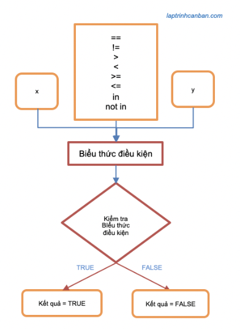

記事掲載：https://laptrinhcanban.com/ja
Python で比較演算子を使用する方法。このレッスンの後、Python で比較演算子を使用して表現されたPython 比較を学習し、それらを適用してPython 文字列を比較したり、Python で2 つのリストを比較したり、Pythonで他のデータ型を比較したりします。
Pythonの比較演算子表
Python で比較を実行するには、以下の表にリストされている比較演算子を使用します。
| 演算子 | 条件式 | 意味 |
|---|---|---|
| == | x == y | x と y が等しい |
| != | x != y | x と y が等しくない |
| > | x > y | x は y より大きい |
| < | x < y | x は y より小さい |
| >= | x >= y | x が y 以上 |
| <= | x <= y | x が y 以下 |
| in | x in y | 要素 x が y に存在する |
| not in | x not in y | 要素 x は y に存在しません |
Python での比較は、比較演算子と左右の 2 つの値を組み合わせて条件式にし、この条件式が true または false であることを確認して結果を返します。
Python での比較の結果は、True (真) または False (偽) の 2 つの値を持つ Python のブール型になり、Pythonの比較演算子は、if文で使用される条件式を構築するために使用されます。.

Pythonで等しいものを比較する
2 つの値が等しいかどうかを比較するには==演算子または!=演算子を使用します。
2 つの値が等しい場合、Python の比較演算子==は True を返し、2 つの値が等しくない場合、Python の他の比較演算子!=は True を返します。以下の Python で等値比較を使用した具体的な例をいくつか見てみましょう。
Python で 2 つの数値を比較する
Python で等値比較を使用して 2 つの数値を比較する場合、整数と整数、実数と実数を比較できるだけでなく、整数と実数などの異なるデータ型の数値も比較できます。
例えば：
print(1 == 1) |
- Python の数値型の詳細については、Python の数値型に関する記事を参照してください。
Python 文字列を比較する
等価比較を使用して python 文字列を比較する場合、それらの値が等しいかどうかをチェックします。
Pythonで文字列を比較する場合、大文字と小文字を区別する必要があることに注意してください。例えば：
print("Hello" == "Hello") |
Python で 2 つのリストを比較する
Pythonで等値比較を使用して 2 つのリストを比較する場合、2 つのリストの要素の値がすべて同じ場合は True が返されます。例えば：
print(["Red", "Blue"] == ["Red", "Blue"]) |
Python で 2 つのリストを比較する場合、2 つのリスト内の要素の順序に注意する必要があることに注意してください。2 つのリスト内の要素の値が同じでも、2 つのリスト内の順序が異なる場合、2 つのリストは異なると見なされます。
print(["Red", "Blue"] == ["Red", "Blue"]) |
リストと同様に、次のように 2 つのタプル間の等価比較も使用します。
print(("Red", "Blue") == ("Red", "Blue") |
Python で文字列と数字を比較し、論理エラーに気付く
基本的に、Pythonで文字列と数値を比較することはできません。これら2つのデータ型は完全に異なるからです。
ただし、文字列と数値の間で等号を比較する場合、計算の結果は常に Falseである ため、エラーは発生しないので、キーボードから数字を入力するときには文字列としてPythonは受け取るため、入力した文字列を数字データ型に変更せずにそのまま使ってしまうことが多いです。。
たとえば、input() コマンドを使用してキーボードから数値を入力し、次のように数値と比較します。
print("数字を入力してください") |
結果：
>>> 数字を入力してください |
なぜキーボードから数字の 1 を入力したにもかかわらず、if ブロック内のステートメントは常に無視され、else は常に実行され、結果は常に”1 とは異なる”ことがわかりますか。
答えは、キーボードから数値 1 を入力しても、python はキーボードからの入力を文字列型として扱い、文字列と数値の等価比較結果は常Falseになり、結局else文の実行結果は出力されたということです。
print("数字を入力してください") |
このエラーを回避するには、入力された数字を計算する前に、python int関数またはpythonの float() 関数を使用して数値に変換するように常に注意してください。
Pythonの大小比較
Python で大小を比較するには、演算子<、>、>=および<=を使用します。
左側の値が右側の値よりも小さい場合、<演算子は Trueを返し、逆の場合はFalseを返す。
左側の値が右側の値より大きい場合、>演算子は True を返し、逆の場合はFalseを返す。
左側の値が右側の値より大きいか等しい場合、>=演算子は True を返し、逆の場合はFalseを返す。
左側の値が右側の値より小さいか等しい場合、<=演算子は True を返し、逆の場合はFalseを返す。
次の python 比較を使用して、いくつかの具体的な例を見てみましょう。
Python で 2 つの数値を比較する
Python で大小比較を使用して 2 つの数値を比較する場合、それらの値が大きいか小さいかを確認します。
print(5 > 3) |
Python では、小さい比較と大きい比較を使用して 2 つの複素数を比較できないことに注意してください。
print((5 + 2j) > (3 + 4j)) |
次のエラーが発生します。a:
Traceback (most recent call last): |
Python 文字列を比較するn
大小比較を使用して python 文字列を比較する場合、2 つの文字列の値を直接比較する代わりに、それらの Unicode コード ポイントを比較します。
文字の Unicode コード ポイントを確認するには、次のように Python で ord() 関数を使用します。
print(ord("a")) |
2 つの単一文字を大小比較するときは、単純にそれらの Unicode コード ポイントを比較します。たとえば、a文字の Unicode コード ポイントは97であり、 Aの文字のUnicode コード ポイントは65であるため、aとAを比較するとAよりaの方は大きいです。
print( "a" > "A") |
ただし、2 つの文字列を比較する場合、単純に各文字の Unicode コード ポイントを比較することはできません。
この場合、比較処理は2 つの文字列の最初の文字から開始され、最初の異なる文字が現れるまで続きます。
そして各文字列にある最初の現れた異なる文字のUnicodeコード ポイントによる大小比較の結果は、文字列全体の比較結果となります。
例えば：
print( "aAaaaaa" < "aaa") |
例１では、2 つの文字列の最初の異なる文字はAとaであるため、２つの文字列の比較結果はAとaの比較結果となります。
例 2 も同様、２つの文字列の比較結果はaとAの比較結果となります。
Python で 2 つのリストを比較する
Pythonで大小比較を使用して2 つのリストを比較する場合、2 つのリストで異なる値を持つ最初の要素が比較に使用されます。
例えば：
print(["red", "blue", "green"] > ["red", "blue", "white"]) |
この例では、2 つの文字列で異なる値を持つ最初の要素はgreenとwhiteであるため、これら 2 つの文字列の大小比較の結果によって、それらを含む 2 つのリストの大小比較の結果が決まります。
リストと同様に、次のように 2 つのタプル間の小さい比較と大きい比較も使用します。
print(("red", "blue", "green") > ("red", "blue", "white")) |
inとnot in演算子を使用して要素の存在を確認
Pythonで要素の存在を確認するには、 in 演算子やnot in 演算子などの比較演算子を使用します。
in 演算子は、チェックする要素が存在する場合に True を返し、逆に、not in 演算子は、チェックする要素が存在しない場合に True を返します。
たとえば、Python で要素の存在チェックを使用して、リスト、タプル、または次のような文字列内の要素の存在をチェックします。
print( "apple" in ["orange", "apple", "lemon"] ) |
Python の要素の存在チェックは数学などPythonの多くのデータ型に適用できます。たとえば、指定したキーまたは値が辞書に存在する かどうかをチェックしたり、setで要素を見つけたりすることができます。
Python で異なるデータ型を比較する
Python では比較演算子を使って異なるデータ型を比較できる場合がありますが、Python では異なるデータ型を比較できない場合もあります。
たとえば、次のように整数と実数を比較できます。
print(8 == 8.0) |
しかし、整数を文字列と比較すると、TypeError が返されます
print(10 > "1") |
エラー内容:
Traceback (most recent call last): |
Python で数値と数字を比較する必要がある場合は、Python でint 関数を使用して、数字のデータ型を文字列から数値型に変換してから、次のようにそれらを比較します。
print( 10 > int("1") ) |
まとめ
上記 Kiyoshi は、 pythonの比較演算子によって表される python での比較の使用方法について説明しました。レッスンの内容をよりよく理解するために、今日の例を書き直す練習をしてください。
そして、次のレッスンで Python の知識についてさらに学びましょう。
URL Link
ホーム › 初心者向けのpython学習>>07. pythonの条件分岐